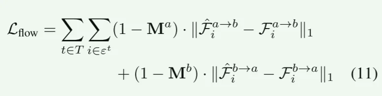
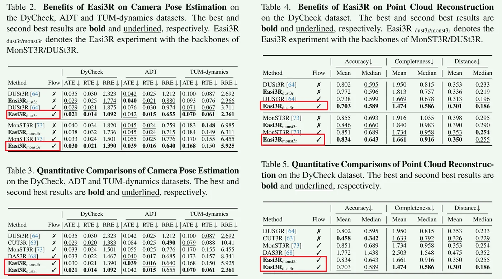
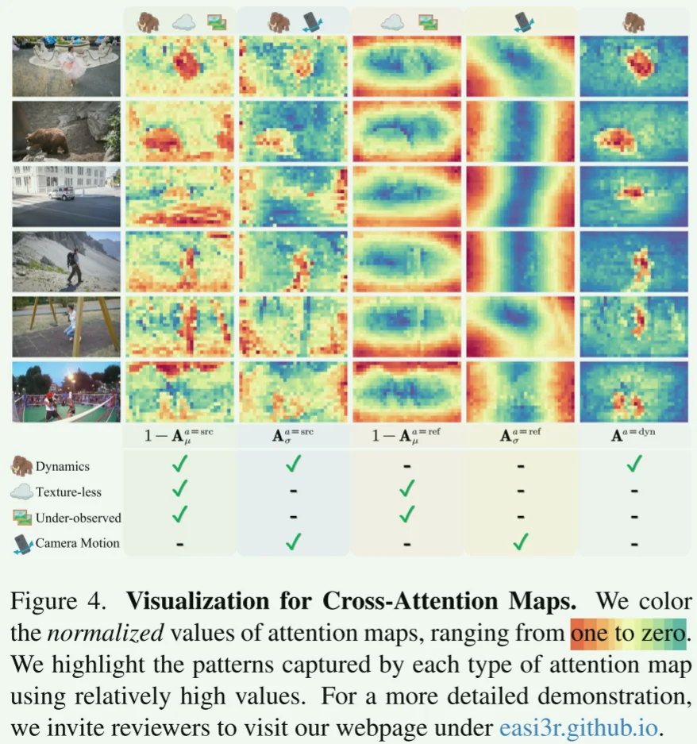

Dynamic, Training-free, Attention Disentanglement
DUSt3R 训练集只有静态，强制要求两张图对齐到统一坐标系。当输入为动态时 DUSt3R 输出的 pointmap 会把背景和前景强行对应，出现扭曲。
但本文发现即使输出强制进行了刚性对齐，但 Transformer 内的 cross-attention 还是有区别，背景和前景的 attention 是解耦的，图A的背景像素的attention只关注图B中的背景像素。
Pipeline
把DUSt3R 的 decoder 的 cross attention map 拿出来求时间均值和方差图，均值图代表稳定的-静态，方差图代表变化的-动态。然后得到一个掩码，来剥离动态和静态。
\[A^{dyn} = \underbrace{(1 - A_{\mu}^{src})}_{\text{像动态/无纹理}} \cdot \underbrace{A_{\sigma}^{src}}_{\text{确实在动}} \cdot \underbrace{A_{\mu}^{ref} \cdot (1 - A_{\sigma}^{ref})}_{\text{排除参考帧的噪声}}\] \(A_{\mu}^{src}\) ：大概率是静态； \(A_{\sigma}^{src}\) ：源视图注意力在时间轴上的波动程度，表示动态； \(A_{\mu}^{ref}\)：参考视图的平均注意力强度，认为是参考帧自己的图像质量体现，越高说明这块区域越适合重建，低了就是边缘或者弱纹理。（避免把边缘和弱纹理认为是动态的） \(A_{\sigma}^{ref}\) ：参考帧的不稳定性，\((1 - A_{\sigma}^{ref})\) 是找到稳定像素。 聚类+二值： 邻域像素聚类，补全动态mask的像素缺陷，避免不完整。然后Otsu二值。
如果直接在输入图片上把动态物体涂黑（或把对应的 token 替换成 mask token），重建效果显著下降。(out-of-distribution input)
所以再infer一次，手动切断动态区域的信息流。当 Reference View 的像素参考 Source View 的动态物体时，本文强制将其权重置为 0。 \[\text{softmax}(\mathbf{A}) = \begin{cases} 0 & \text{if } M^{a \leftarrow b} \text{ indicates dynamic} \\ \text{softmax}(\mathbf{A}) & \text{otherwise} \end{cases}\]
注意： 只应用在reference decoder上，因为 ref 作为基准我们要保证它里面只有静态，不受动态干扰，这样才能更好解算pose。但是src的任务是为了把自己对齐到ref，如果把src也mask了，那信息就太少了很难算到好的相对pose。
最后就是，ref decoder 在纯静态保证位姿准确的前提下，通过 cross attention 来使 src decoder 输出位姿合理的pcd。
用光流在静态背景验证几何：几何光流与 Optical Flow 对比，只关心静态背景的光流误差来约束BA。

Experiments

Conclusion
提出一种 training-free 的方法，挖掘了DUSt3R 内部的动/静解耦性质。
- 用 attention 的时空统计特性（均值/方差）生成动态 mask。
- 非对称重加权：只屏蔽 ref decoder 的动态区域，只对静态解算位姿。
- 全局优化：用 mask 过滤动态光流，优化相机轨迹。
局限： 深度精度上限取决于DUSt3R；对于静态背景以来很强，如果高动态那就效果不好了。
借鉴： 非对称处理；动静分离的时候方差表示变化-即运动。
补充
Easi3R的操作是统计学的（均值和方差），但它依赖的本质是几何学的（极线约束）。
因为在双目视觉中，只要物体是静态的，那么当它在相机A中是一个点时，在相机B中一定在一条线上。这是由对极几何决定的，而DUSt3R恰好又是这种 pair-wise 形式的前馈重建。所以它找动态信息，本质上就是在找两帧之间，哪里的像素没有在相机B中出现在一条直线的附近，那这个就是在运动的。
进入到 attention map 的本质里就是：cross attention map 是在图2中寻找图1像素的匹配点。所以对于静态的背景，模型在极线周围就可以找到完美匹配，那它测attention map 在这附近就得分会很高，而对于动态的，它得分就很分散。自然均值也不高，方差也大，分布变得散乱。
从下图可以看出来： 静态的得分高，更蓝（因为这里是 \(1-A\)，相当于取反了）。

原文：Our key insight is that DUSt3R implicitly learns rigid view transformations through its cross-attention layers, assigning low attention values to tokens that violate epipolar geometry constraints, such as texture-less, under- observed, and dynamic regions. By aggregating cross-attention outputs across spatial and temporal dimensions, we extract motions from the attention layers.